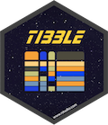

Provides a 'tbl_df' class (the 'tibble') that provides stricter checking and better formatting than the traditional data frame.
Details

The tibble package provides utilities for handling tibbles, where
"tibble" is a colloquial term for the S3 tbl_df class. The tbl_df
class is a special case of the base data.frame.
class, developed in response to lessons learned over many years of data
analysis with data frames.
Tibble is the central data structure for the set of packages known as the tidyverse, including dplyr, ggplot2, tidyr, and readr.
General resources:
Website for the tibble package: https://tibble.tidyverse.org
Tibbles chapter in R for Data Science
Resources on specific topics:
Create a tibble:
tibble(),as_tibble(),tribble(),enframe()Inspect a tibble:
print.tbl(),glimpse()Details on the S3
tbl_dfclass:tbl_df
See also
Useful links: